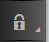
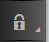

Verify the XML Digital Signature
Context
The XML Signature Verifier validates the XML signature contained in the incoming message body and returns the content which was signed in the outgoing message body.
The Verifier supports enveloping and enveloped XML signatures and detached XML signatures. In the enveloping XML signature case, one reference whose URI references the only allowed 'Object' element via ID, and an optional reference to the optional KeyInfo element via ID is supported
Working of XML Signature Verifier
In the validation process, a public key is required and it is fetched from the worker node keystore. On receiving the XML message, the Verifier canonicalizes the data identified by the 'Reference' element and then digests it to give a digest value. The digest value is compared against the digest value available under the 'Reference' element of the incoming message. This helps to ensure that the target elements were not tampered with.
Then, the digest value of the canonicalized 'SignedInfo' is calculated. The resulting bytes are verified with the signature on the 'SignedInfo' element, using the sender's public key. If both the signature on the 'SignedInfo' element and each of the 'Reference' digest values verify correctly, then the XML signature is valid.
Procedure
-
In the palette, choose
 
  Verifier XML Verifier
Verifier XML Verifier  .
.
-
Enter the parameters to verify XML digital signature for the incoming
message.
Table 1: Parameters and Values of XML Signature Verifier Parameters
Description
Name
Name for the Verifier step
Expected Signature Type
Select the expected Signature type:
-
Enveloping or Enveloped XML Signature: If the signature is contained within the content or the signature contains the signed data.
Verifying Enveloping Signature: If the incoming message has enveloping signature
- an optional 'Reference' to the optional 'KeyInfo' element via ID is supported
- 'References' can have one optional transform whose algorithm must be a canonicalization method
So it implies, an enveloping XML signature with only the following structure is supported ("?" denotes zero or one occurrence, the brackets [] denotes variables whose values can vary).
<Signature> <SignedInfo> <CanonicalizationMethod> <SignatureMethod> <Reference URI="#[object_id]"> (<Transform Algorithm=[canonicalization method]/>)? <DigestMethod> <DigestValue> </Reference> (<Reference URI="#[keyinfo_id]"> (<Transform Algorithm=[canonicalization method]/>)? <DigestMethod> <DigestValue> </Reference>)? </SignedInfo> <SignatureValue> (<KeyInfo (Id="[keyinfo_id]")?>)? <Object Id="[object_id]"/> </Signature>Verifying Enveloped Signature: If the incoming message has enveloped signature
- One reference with empty URI and an optional reference to the KeyInfo element via its ID is allowed
- An additional transform containing a canonicalization method is supported, beside the transform with algorithm "http://www.w3.org/2000/09/xmldsig#enveloped-signature".
So it implies, an enveloped XML signature with only the following structure is supported ("?" denotes zero or one occurrence, the brackets [] denotes variables whose values can vary).
<[parent]> <Signature> <SignedInfo> <CanonicalizationMethod> <SignatureMethod> <Reference URI=""> <Transform Algorithm="http://www.w3.org/2000/09/xmldsig#enveloped-signature"/> (<Transform Algorithm="[canonicalization method]"/>)? <DigestMethod> <DigestValue> </Reference> (<Reference URI="#[keyinfo_id]"> (<Transform Algorithm="[canonicalization method]"/>)? <DigestMethod> <DigestValue> </Reference>)? </SignedInfo> <SignatureValue> (<KeyInfo (Id="[keyinfo_id]")?>)? </Signature> </[parent]> -
Detached XML Signatures: If the signature is contained within the content or the signature contains the signed data.
Verifying Detached Signature If the incoming message has detached signature:
- Signature element must be a sibling of the signed element
- Signed element must have an attribute of type ID
- Signature references signed element via the ID value
So it implies, a detached XML signature with only the following structure is supported ("?" denotes zero or one occurrence, the brackets [] denotes variables whose values can vary).
(<[signed element] Id="[id_value]"> <!-- signed element must have an attribute of type ID --> ... </[signed element]> <other sibling/>* <!-- between the signed element and the corresponding signature element, there can be other siblings --> <Signature> <SignedInfo> <CanonicalizationMethod> <SignatureMethod> <ReferenceURI="#[id_value]"type="[optional_type_value]"> <!-- reference URI contains the ID attribute value of the signed element --> <TransformAlgorithm=[canonicalization method]/> <DigestMethod> <DigestValue> </Reference> (<ReferenceURI="#[generated_keyinfo_Id]"> <TransformAlgorithm="http://www.w3.org/TR/2001/REC-xml-c14n-20010315"
 />
<DigestMethod>
<DigestValue>
</Reference>)?
</SignedInfo>
<SignatureValue>
(<KeyInfoId="[generated_keyinfo_id]">)?
<Signature>)+
/>
<DigestMethod>
<DigestValue>
</Reference>)?
</SignedInfo>
<SignatureValue>
(<KeyInfoId="[generated_keyinfo_id]">)?
<Signature>)+
Check for Key Info Element
Select this option to check that the XML Signature contains a Key Info element
The KeyInfo element has to contain either the certificate chain, the certificate, the Issuer Distinguished Name and Serial Number, or the Key Value element (or combinations of these attributes).
Note In case multiple public key aliases are specified (using the Public Key Alias attribute), this option is mandatory (to make sure that from the KeyInfo the public key can be derived).Disallow DOCTYPE Declaration
Select this option to disallow DTD DOCTYPE declaration in the incoming XML message
Public Key Alias
Enter an alias name to select a public key and corresponding certificate
Using the Public Key Alias, you can enter one or multiple public key aliases for the Verifier.
Note In general, an alias is a reference to an entry in a keystore. A keystore can contain multiple public keys. You can use a public key alias to refer to and select a specific public key from a keystore.You can use this attribute to support the following use cases:
- Management of the certificate lifecycle: Certificates have a certain validity period. Using the Public Key Alias attribute in the Verifier step, you can enter both an alias of an existing certificate (which will expire within a certain time period) and an alias for a new certificate (which not necessarily has to exist already in the keystore). That way, the Verifier is configured to verify messages signed by either the old or the new certificate. As soon as the new certificate has been installed and imported into the keystore, the Verifier refers to the new certificate. That way, certificates can be renewed without any downtime.
- You can use different aliases to support different signing senders with the same Verifier step. Using the Public Key Alias attribute, you can specify a list signing senders.
-